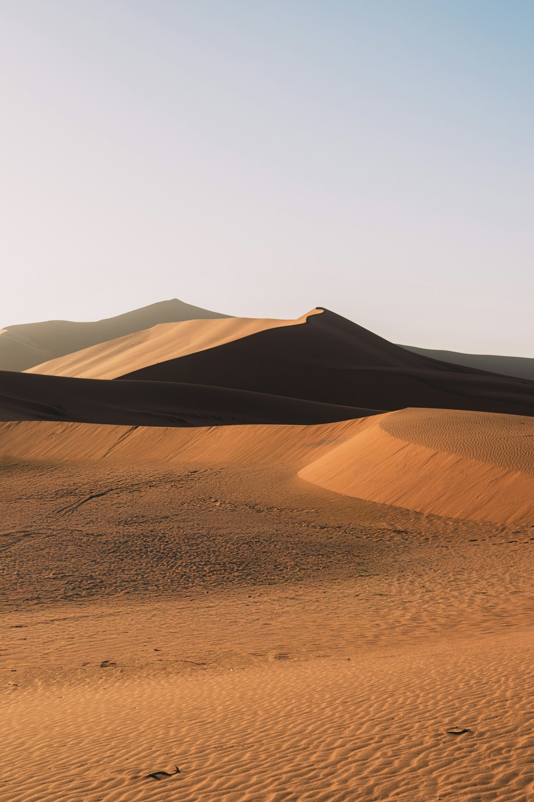
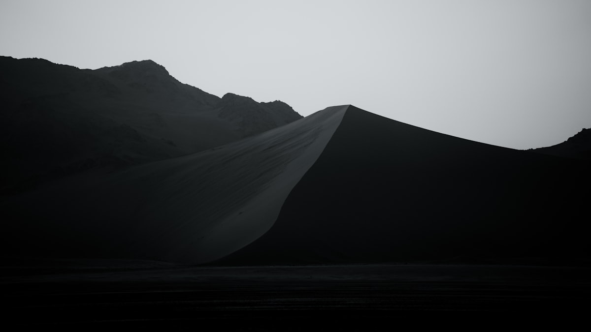
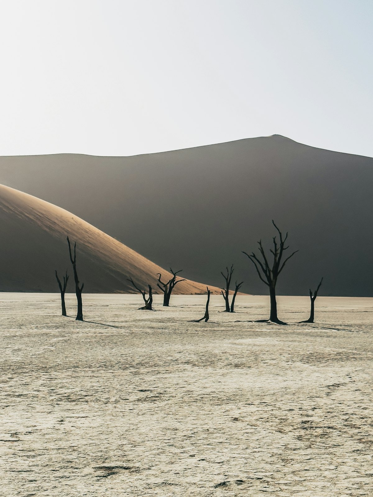
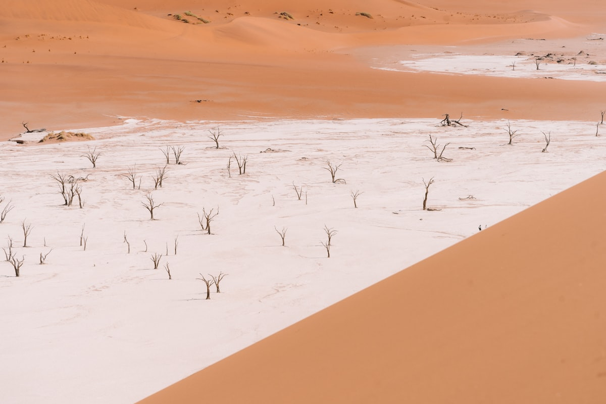
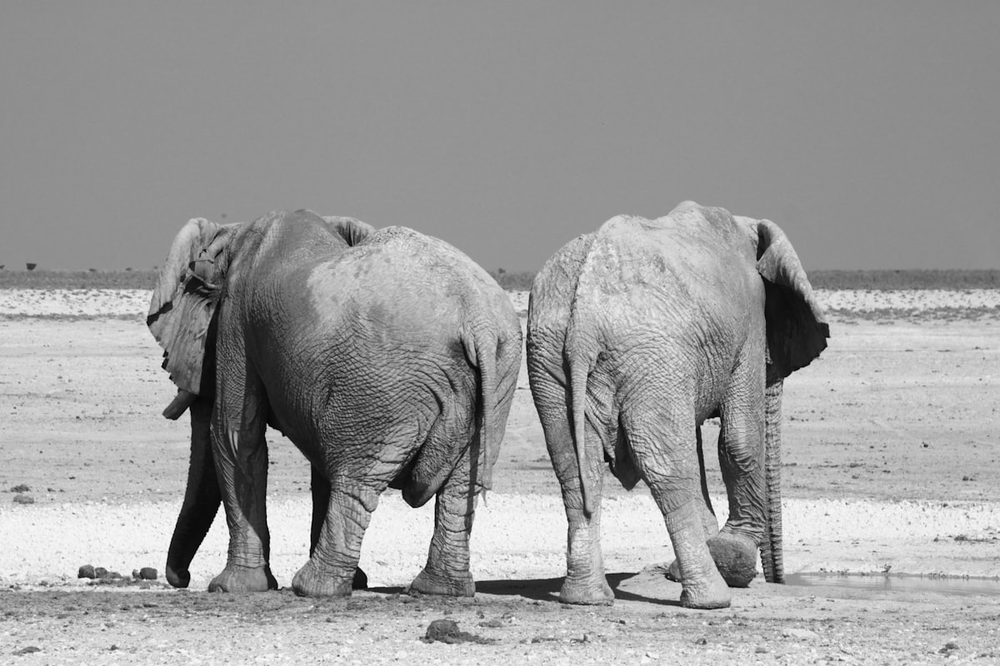
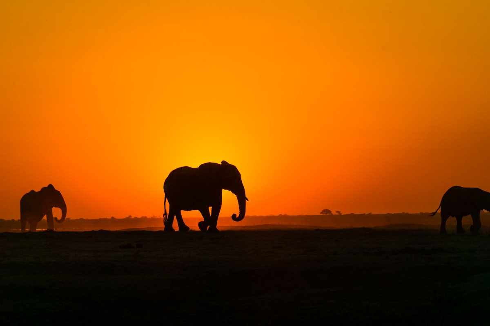
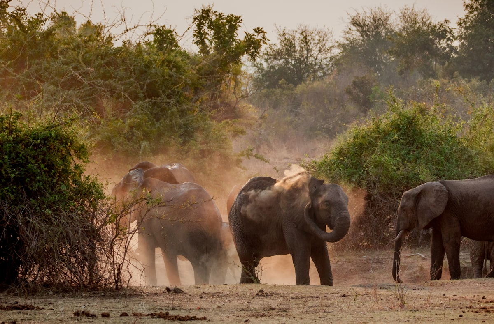
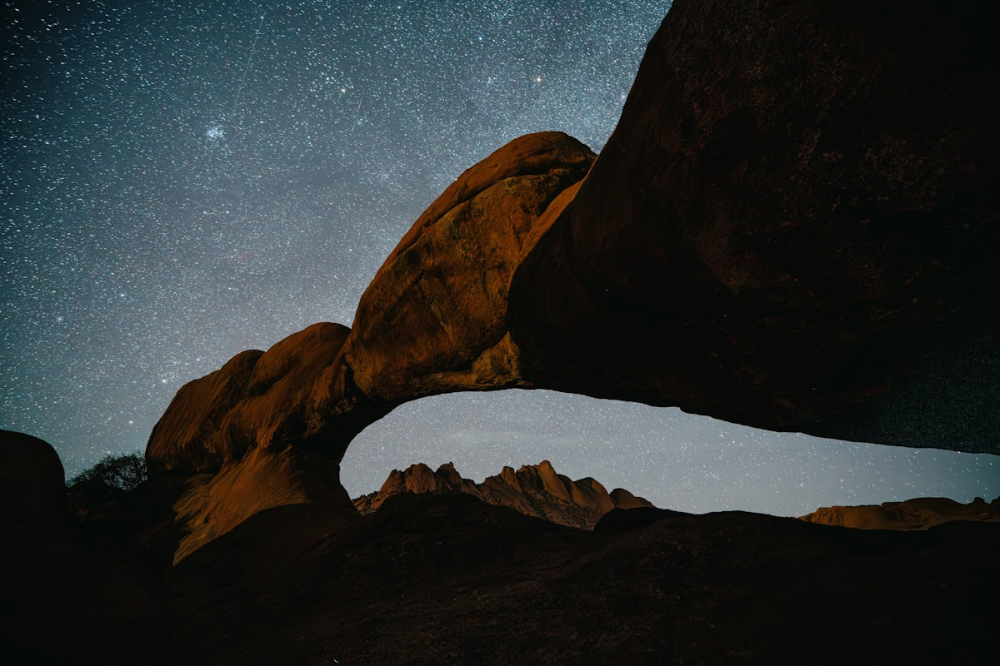

| 事项 | 结论 |
|---|---|
| 事项 | 结论 |
| 签证（最关键） | 中国内地护照需提前办纳米比亚签证（驻华使馆受理，普通 12 个工作日、加急 3 个工作日，停留 30 天单次），材料含护照原件/照片/往返机票/酒店订单/保险 |
| 时差与电源 | 比北京慢 7 小时（夏令时 6 小时）；电压 220V，插座为 D/M 型（南非三脚大圆插），需带南非制式转换头 |
| 货币 | 纳米比亚元（NAD），1 元 ≈ 2.6 纳米比亚元，与南非兰特 1:1 通用；刷卡普及但偏远加油站要现金 |
| 推荐方案 | 10 天自驾大环线：温得和克→苏丝斯黎→斯瓦科普蒙德→鲸湾港→埃托沙 |
| 交通方式 | 全程自驾：4×4 或 SUV（Toyota Hilux 等），苏丝斯黎最后 5km 深沙段需四驱或接驳车 |
| 预算（人均） | 经济 18000–26000 ／ 标准 32000–48000 ／ 舒适 65000–95000（人民币） |
| 三件提前事 | ① 办签证（提前 1 个月） ② 订 4×4 与园内营地（nwr.com.na 提前 2–3 个月） ③ 备南非转换插头与现金 |
以下为 10 天 9 晚的推荐节奏：以温得和克为轴心走「红沙漠 → 海滨 → 埃托沙」大环线，全程自驾约 1800km。每日车程 ≤5h，景点集中在上午凉爽时段，午后躲太阳。
| 日期 | 行程 | 过夜地 | 主题 |
|---|---|---|---|
| D1 抵温得和克 | 转机约 20h 抵达，机场取车，市区国会山+采购补给 | 温得和克 | 抵达日 |
| D2 | 温得和克→苏丝斯黎（约 4–5h），下午塞斯里姆峡谷日落 | 苏丝斯黎 | 驶向红沙漠 |
| D3 | 苏丝斯黎全日：Dune 45 日出 + 死亡谷 + 大爸爸沙丘 | 苏丝斯黎 | 红沙漠全日 |
| D4 | 苏丝斯黎→斯瓦科普蒙德（约 5–6h），傍晚海边漫步 | 斯瓦科普蒙德 | 驶向大西洋 |
| D5 | 鲸湾港全日：泻湖船游海豚海豹 + 生蚝午餐 + 粉红湖火烈鸟 | 斯瓦科普蒙德 | 大西洋日 |
| D6 | 斯瓦科普蒙德沙丘四驱/滑沙（可选），午后北上宿 Outjo | Outjo | 北上中转 |
| D7 | Outjo→埃托沙入园：自驾游猎 + Okaukuejo 灯光水坑夜观 | 埃托沙 | 埃托沙第一日 |
| D8 | 埃托沙全日：晨游水坑 + 下午 Halali 方向游猎 | 埃托沙 | 游猎全日 |
| D9 | 最后晨游→出园南下回温得和克（约 5–6h），还车前加油 | 温得和克 | 返首都 |
| D10 返程 | 还车，市区购物，温得和克✈北京 | — | 收尾 |
以下为 10 天全程的逐小时执行时间线，可当作「当天打开照着走」的清单。标注 ※ 的可选项视体力与天气取舍。
| 时间 | 事项 |
|---|---|
| 全天 | 北京✈（经亚的斯/约翰内斯堡/迪拜转机约 20h）✈温得和克，抵达霍齐亚·库塔科国际机场 |
| 14:00–15:30 | 机场取车（提前在租车公司预订 4×4/SUV，确认保险与满油条款） |
| 16:00–18:00 | 市区初探：国会山、独立博物馆（Alte Feste）、Namib Craft Centre 手工艺中心 |
| 18:30 | 入住+晚餐，超市补给水、零食与干粮 |
| 时间 | 事项 |
|---|---|
| 08:00 | 温得和克出发（约 300km，4–5h，多为柏油路） |
| 09:30–10:30 | 途经 Solitaire 索利泰尔：补给站+著名的苹果派，加满油（后面油站少） |
| 13:00 | 抵达 Sesriem 塞斯里姆，入住园内营地/旅舍 |
| 15:30–17:30 | 塞斯里姆峡谷徒步（约 1h）：风蚀岩谷+枯河床 |
| 19:00 | 营地日落晚餐，早睡准备明早入园 |
| 时间 | 事项 |
|---|---|
| 05:30 | 日出前开门进园（住园内可提前 1h） |
| 06:30–08:30 | Dune 45 沙丘日出：325m 高，登顶约 1–2h，光影红沙最上镜 |
| 09:00–11:30 | 死亡谷 Deadvlei：4×4 过深沙段或换接驳车（N$200/人），枯树白粘土+红沙丘 |
| 12:00 | 中午前撤出，返回营地避暑 |
| 15:00–17:00 | 自由：沙丘漫步/拍纳秒沙纹/午睡 |
| 时间 | 事项 |
|---|---|
| 08:00 | 苏丝斯黎出发（约 340km，5–6h） |
| 12:30 | 途中午餐（牧场小镇） |
| 14:00 | 抵达 斯瓦科普蒙德，入住海边酒店 |
| 15:30–18:00 | 海边漫步：Mol 码头、德式老城区、纳米布沙漠与海相遇的沙海奇观 |
| 时间 | 事项 |
|---|---|
| 08:00–08:30 | 驱车至鲸湾港（约 30km） |
| 09:00–12:00 | 泻湖船游（约 650–950 纳元/人）：海豚、海豹、鹈鹕，风沙平原与海相连 |
| 12:30–14:00 | 午餐：纳米比亚生蚝（世界名产，冷水蚝） |
| 14:30–16:30 | 粉红盐湖 + 火烈鸟：泻湖观鸟，11 月–次年 3 月火烈鸟最多 |
| 17:00 | 返斯瓦科普蒙德 |
| 时间 | 事项 |
|---|---|
| 08:30–11:30 | 可选：沙丘四驱车/滑沙（约 600–1200 纳元/人）或跳伞（约 1900 纳元） |
| 12:00–13:00 | 午餐 |
| 13:30–18:30 | 北上 Outjo（约 430km，5.5h），入住 Outjo 旅舍，为明早入园做准备 |
| 时间 | 事项 |
|---|---|
| 08:00 | Outjo→埃托沙 Andersson Gate（约 1h） |
| 09:30 | 购票入园（成人约 150 纳元/天 + 车辆约 50 纳元） |
| 10:00–12:30 | 自驾游猎：向 Okaukuejo 营地沿途，大象/长颈鹿/斑马 |
| 13:00 | 入住 Okaukuejo 营地，午餐 |
| 16:00–18:00 | 下午水坑游猎 |
| 20:00 | Okaukuejo 灯光水坑夜观：大象与犀牛夜间来喝水 |
| 时间 | 事项 |
|---|---|
| 06:00–10:30 | 晨间游猎：清晨动物密度是中午的 3 倍，水坑巡游（Okondeka/Goas） |
| 11:00 | 回营休息/午餐 |
| 15:00–18:00 | 下午游猎：Halali 方向，盐盘边缘看狮子/猎豹踪迹 |
| 19:00 | 晚餐+再访灯光水坑 |
| 时间 | 事项 |
|---|---|
| 06:30–09:00 | 最后晨游（Namutoni 方向或再巡 Okaukuejo 水坑） |
| 10:00 | 出园（Andersson Gate） |
| 10:30–17:00 | 南下回温得和克（约 400km，5–6h，途中午餐） |
| 18:00 | 入住温得和克，还车前加满油 |
| 时间 | 事项 |
|---|---|
| 08:30–09:30 | 还车（满油归还，结算保险与额外里程） |
| 10:00–11:30 | 市区购物：紫檀木雕、纳米比亚宝石、手工艺品 |
| 12:00 | 前往机场（约 42km，留足时间） |
| 14:00–次日 | 温得和克✈（转机）✈北京，入境到家 |
必去（必去）/ 顺路（顺路）/ 可跳过（可跳过）。

顺路
必去
顺路
必去
必去
顺路
顺路图片为 Unsplash 主题图（苏丝斯黎红沙丘、死亡谷、埃托沙水坑大象、纳米比亚星空等均为纳米比亚实景），用于页面配图。更多免费景点：温得和克国会山、鲸湾港泻湖、斯瓦科普蒙德沙滩、埃托沙各公共水坑。
点击左侧节点可在地图上定位；点击地图 marker 会高亮对应节点。坐标为 WGS-84 转 GCJ-02 纠偏后标注。
以下为单人、不含购物的估算，人民币计价；出发地基准北京。汇率按 1 元 ≈ 2.6 纳米比亚元、1 美元 ≈ 7.2 元估算。转机往返按淡季 8000–12000 元计，旺季（6–9 月）上浮 3000–5000；自驾按 2 人分摊成本估算。
| 项目 | 经济（18000–26000） | 标准（32000–48000） | 舒适（65000–95000） |
|---|---|---|---|
| 往返机票 | 转机往返 8000–12000 | 转机直挂 13000–18000 | 含内陆段/灵活票 25000–35000 |
| 租车+油费（9 天） | SUV+接驳车 3500–5500 | 4×4 全险 7500–11000 | 4×4+随行向导 18000–26000 |
| 住宿（9 晚） | 营地+背包客 2500–4000 | 中档旅馆+园内营地 8000–12000 | 豪华旅舍/园内小屋 22000–32000 |
| 门票+活动 | 基础门票约 1000–1500 | 含船游/滑沙 2500–4000 | 含飞行/跳伞等 7000–10000 |
| 餐饮（10 天） | 自炊+快餐 1500–2500 | 餐厅+自炊结合 3500–5500 | 全餐厅+酒水 9000–13000 |
对人文与荒野感兴趣，可在北上埃托沙途中加 2 天达马拉兰（Damaraland）：辛巴红泥族村落、Twyfelfontein 岩画、沙漠象；或在鲸湾港参加 Skeleton Coast 骷髅海岸一日飞行。全程车程相应增加，建议把埃托沙压缩到 2 天。
带娃推荐：埃托沙砍到 2 天、加哈马哈马野生动物保护区（Okonjima 猎豹基地）半日，看动物+教育两不误；鲸湾港船游 2 小时对儿童友好；全程宿营地（自助厨房+泳池）性价比高。纳米比亚路况好，儿童安全座椅租车时一并订。
| 方式 | 时长 | 参考价 | 备注 |
|---|---|---|---|
| 转机（唯一） | 北京→温得和克约 20h | 往返 8000–18000 元 | 经亚的斯亚贝巴/约翰内斯堡/迪拜，埃塞俄比亚航空班次多 |
| 直飞 | — | — | 中纳暂无直航 |
| 国际铁路 | — | — | 无陆路铁路连接中国，只能飞机 |
| 区域 | 价格/晚 | 优点 | 短板 |
|---|---|---|---|
| 温得和克·市区 | 经济 250–450 / 标准 500–900 | 租车公司集中，补给方便 | 旺季房源紧 |
| 苏丝斯黎·Sesriem 园内 | 营地 200–400 / 旅舍 800–2000 | 日出提前入园，位置绝杀 | 需提前 2–3 个月订 |
| 斯瓦科普蒙德·海边 | 经济 350–600 / 标准 700–1400 | 度假氛围，活动中心 | 旺季活动爆满 |
| 鲸湾港·泻湖旁 | 标准 600–1200 | 船游码头近，海鲜餐厅多 | 离斯瓦科普蒙德 30km |
| Outjo·镇区 | 经济 250–450 / 标准 500–900 | 埃托沙前哨，补给方便 | 镇小选择少 |
| 埃托沙·园内营地 | Okaukuejo/Halali 350–900 | 水坑夜观，位置无敌 | 住宿简单、要提前订 |